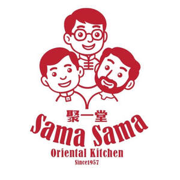

Trade Mark Journal No.2026/005 30 January 2026
UK00004323190 13 January 2026 (29,30,43)

- Class 29
- Meat and meat products; Fish, seafood and molluscs, not live; Dairy products and dairy substitutes; Edible oils and fats; Processed fruits, fungi, vegetables, nuts and pulses; Jellies, jams, compotes, fruit and vegetable spreads; Soups and stocks, meat extracts; Sausage skins and imitations thereof; Prepared meals consisting primarily of meat; Prepared meals consisting primarily of fish; Prepared meals consisting primarily of vegetables; Frozen meals consisting primarily of meat; Frozen meals consisting primarily of fish; Prepared salads; Chips [french fries]; Cheese; Cheese-based snack foods; Milk-based beverages; Yoghurt beverages; Chilled dairy desserts.
- Class 30
- Coffee, teas and cocoa and substitutes therefor; Dried and fresh pastas, noodles and dumplings; Bread; Breakfast cereals, porridge and grits; Doughs, batters, and mixes therefor; Yeast and leavening agents; Salts, seasonings, flavourings and condiments; Coffee-based beverages; Chocolate-based beverages; Bakery goods; Pastries; Bread and buns; Cakes; Muffins; Ice cream; Frozen yogurt confections; Sauces [condiments]; Seasonings; Pre-packaged lunches consisting primarily of rice, and also including meat, fish or vegetables; Confectionery; Noodle-based prepared meals; Pasta-based prepared meals; Prepared rice dishes; Prepared desserts [confectionery].
- Class 43
- Restaurant and bar services; Information, advice and reservation services for the provision of food and drink; Restaurant services; Fast-food restaurant services; Take-away restaurant services; Provision of food and drink; Café services; Snack-bar services; Self-service restaurants; Catering for the provision of food and beverages.
Choo Yow Faam
Representative: Trama Legal s.r.o.